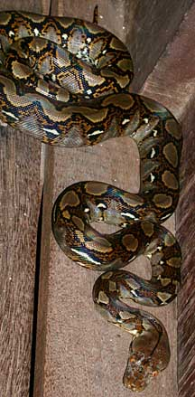
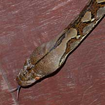
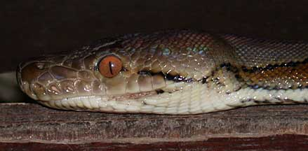
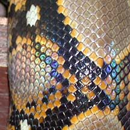

|
|
| snakes text index | photo index |
| Phylum Chordata > Subphylum Vertebrata > Class Reptilia > shore snakes |
| Reticulated
python Broghammerus reticulatus Family Pythonidae updated Oct 2016 Where seen? This enormous but beautiful snake is among the most commonly sighted snakes in Singapore. According to Baker, it is found in almost all habitats from forest to mangroves and also in urban areas. From sea level up to 1,000m. Elsewhere also near rivers. It is common throughout Southeast Asia. It was previously known as Python reticulatus. According to Catalogue of Life 20 Jan 2014 its scientific name is Broghammerus reticulatus. According to EcologyAsia, its scientific name is Malayopython reticulatus. Features: To about 10m long, but those we might see are usually much shorter and rarely exceed 5m. Among the longest snakes in the world, this powerfully muscled snake is non-venomous and kills by constricting its victims in its coils. Large adults can be dangerous to humans. Even though it is non-venomous, it can give a nasty lacerating bite with its powerful jaws filled with sharp long fangs. Don't disturb a python. It has a pretty net-like pattern ('reticulatus' means 'net-like') and scales that are iridescent in sunlight. What does it eat? It hunts small warm-blooded animals and has pits on the upper lip to detect its prey. It is said to eat nearly anything it can catch from mice, rats to deer and pigs. A good climber, even tree dwellers are not safe from it. It is also an excellent swimmer. It is considered a pest on poultry farms. It is mainly nocturnal. Python babies: Mama snake lays many eggs (124 is the record) and incubates them for three months. The babies look just like their parents. Status and threats: The snake is considered common and are not listed among the threatened animals of Singapore. However, like other creatures of the shores, they are affected by human activities such as reclamation and pollution. |
 Sungei Buloh Wetland Reserve, May 02  |
|
 Sungei Buloh Wetland Reserve, May 02 |
 Sungei Buloh Wetland Reserve, May 02 |
|
| Reticulated pythons on Singapore shores |
| Photos of Reticulated pythons for free download from wildsingapore flickr |
| Distribution in Singapore on this wildsingapore flickr map |
Links
|
|
|